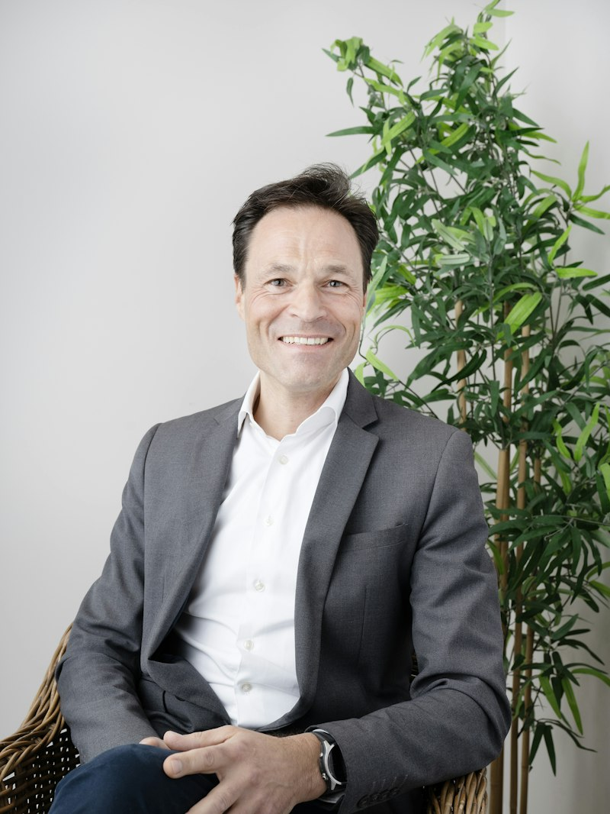
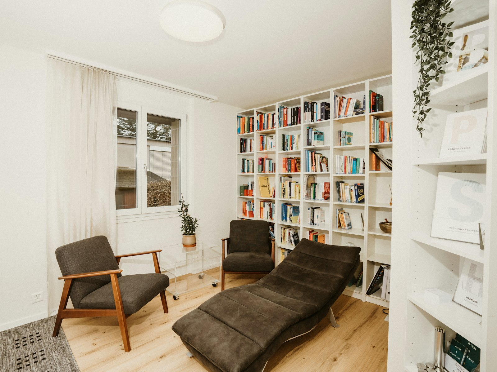

Psicoterapia para adolescentes e adultos em Lins, SP
Um espaço de escuta profissional e sigilosa para entender o que você sente e como se relaciona. Presencial na Clínica Horizonte, região central de Lins. Também atendo online, para quem mora fora da cidade.
Agendar uma conversa- Sigilo profissional garantido pelo Código de Ética
- Clínica Horizonte, centro de Lins

Como funciona o meu trabalho
Meu trabalho é acompanhar você no entendimento do que se passa por dentro: emoções, pensamentos, escolhas e a forma como você se relaciona com as pessoas ao redor. A partir dessa análise, fica mais fácil compreender o próprio comportamento e mudar o que incomoda.
Atendo adolescentes e adultos, com escuta profissional e sigilosa. O ritmo das sessões é combinado com você.
Sou Rafael Bittencourt, psicólogo clínico, CRP 06/123456. Atendo na Clínica Horizonte, na região central de Lins.
Um lugar pensado para você conversar com calma
O consultório fica na Clínica Horizonte, na região central de Lins, com fácil acesso, boa mobilidade e estacionamento.

Ficha do espaço
- Sala
- Climatizada, com iluminação agradável, banheiro privativo, Wi-Fi e frigobar.
- Ambiente
- Jardim de inverno e mobiliário pensado para o diálogo e a escuta.
- Recepção
- Organizada para o atendimento inicial e a orientação de quem chega.
- Acessibilidade
- Banheiros adaptados para pessoas com deficiência, em um ambiente acessível.
- Localização
- R. das Acácias, 320 — região central de Lins, com fácil acesso, mobilidade e estacionamento.
Para quem eu atendo
Toque em uma opção para falar comigo e saber mais.
Psicoterapia individual para adultos
Para quem está lidando com ansiedade, relações, decisões ou momentos de mudança. Sessões regulares, geralmente uma vez por semana.
Quero agendar para mimPsicoterapia para adolescentes
Um espaço só do adolescente, com sigilo garantido dentro dos limites éticos e alinhamento com os responsáveis.
Quero agendar para meu filho(a)Orientação de pais e responsáveis
Para entender melhor o comportamento do filho e saber como acompanhar esse momento.
Quero saber maisAtendimento online
O mesmo trabalho, por videochamada, para quem mora fora de Lins.
Quero saber maisO que você encontra aqui
Sigilo profissional
Tudo o que você fala fica protegido pelo Código de Ética, desde a primeira mensagem.
Escuta sem julgamento
Seu tempo, sua história. O plano de trabalho é construído com você, não para você.
Duas frentes de análise
Os processos internos (emoções, pensamentos, história) e as relações interpessoais (família, trabalho, escola).
Espaço acessível no centro
Clínica Horizonte, com recepção, banheiros adaptados para PCDs e estacionamento.
Do primeiro contato à primeira sessão
-
Você chama no WhatsApp
Conte, em poucas linhas, o que está buscando. Eu respondo e oriento.
-
Combinamos os detalhes
Horário, formato e valor, na própria conversa, sem burocracia.
-
Primeira sessão
Um espaço de escuta para entender a sua demanda e o que você espera.
-
Sessões no seu ritmo
Encontros com frequência combinada, geralmente uma vez por semana.
Pronto para começar? Chama no WhatsApp.
Perguntas que a gente mais recebe
Ficou com dúvida? Chama no WhatsApp.
Geralmente uma vez por semana, no mesmo horário. O ajuste é combinado com cada pessoa.
Por volta de 50 minutos.
Sigilo é a proteção de tudo o que você fala em terapia, prevista no Código de Ética. No atendimento de adolescentes, o combinado sobre o que fica entre o adolescente e o psicólogo é alinhado com ele e com os responsáveis no início.
Sim. A sessão acontece por vídeo, com a mesma duração e o mesmo sigilo.
O valor é combinado no primeiro contato, conforme o tipo de atendimento. Chame no WhatsApp.
Agende sua primeira conversa
Atendimento presencial na Clínica Horizonte, região central de Lins, e online.
Em caso de crise, ligue 188 (CVV, 24 horas, ligação gratuita) ou procure a UPA ou o hospital mais próximo.